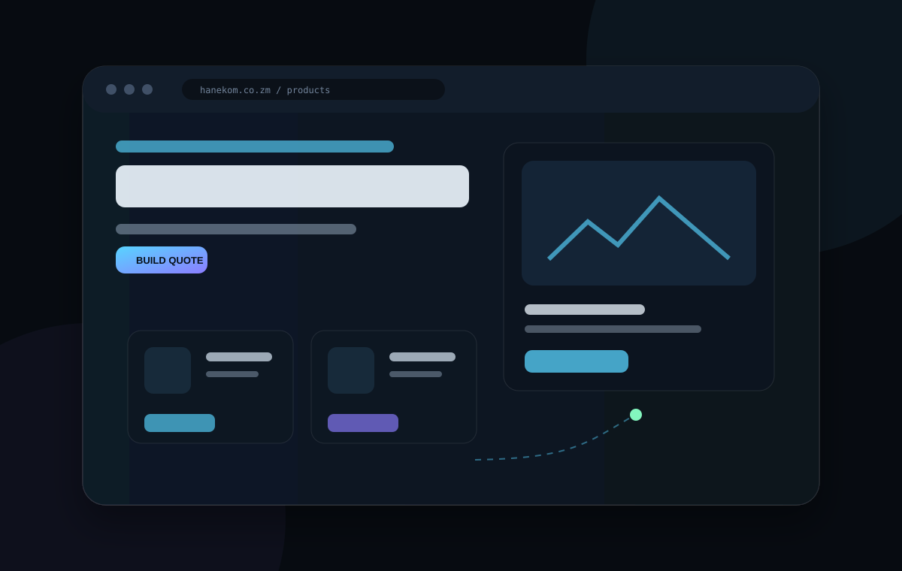
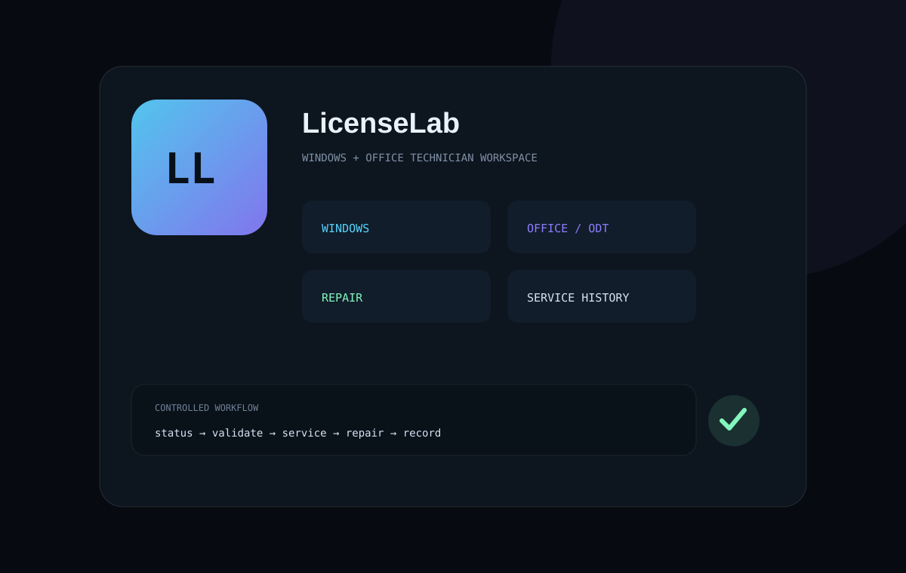
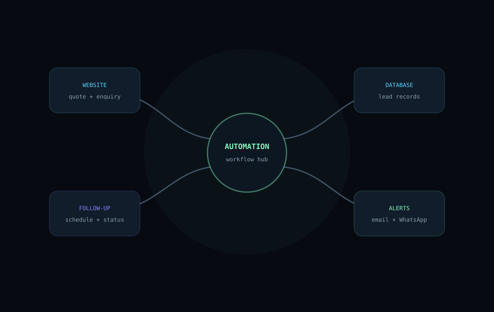

When customers cannot find or request what they need
Design the buying journey around discovery, quotation and communication instead of treating the website like a static brochure.
BUILDING PRACTICAL SYSTEMS
Web platforms, Windows tooling and automation designed around real-world friction—not features for the sake of features.
problem_solver.ps101 Understand the real problem
02 Research constraints & users
03 Design the simplest useful system
04 Build for reliability
05 Test, learn, improve
CONTEXT BEHIND THE WORK
Some projects began with a business problem. Others came from repeated technician tasks or workflows that were too manual. The common thread is turning that friction into something clearer, faster and easier to repeat.
Design the buying journey around discovery, quotation and communication instead of treating the website like a static brochure.
Turn repeated Windows maintenance and diagnostic work into guided, safer and documented technician workflows.
Connect forms, lead records, alerts and follow-ups so useful actions happen consistently instead of manually.
SELECTED WORK
Each project is presented as a case study: the problem, the decisions, what was built, and the value it creates.
Turning an industrial supplier's catalogue into a guided path from product discovery to quotation and customer conversation.
Customers need to find products quickly and request accurate quotes without friction.
A responsive product platform with search, quote-building and direct conversation paths.

A modular technician toolkit that consolidates common Windows repair, cleanup, diagnostics and reporting workflows.
Routine repair work is fragmented across many commands and utilities.
One guided toolkit with safer defaults, reports, backups and reusable tools.

A focused system-health utility built around diagnosis, reporting and protection of non-system data drives.
Repair scripts can become dangerous when destructive operations are applied to the wrong drive.
Drive-aware maintenance with read-only protection, reports and explicit operator choices.

A technician-focused toolkit for legitimate Windows and Microsoft Office licensing, deployment, repair and service workflows.
Licensing, Office deployment and repair tasks live across separate tools and commands.
A single controlled interface for authorized keys, ODT workflows, diagnostics and service history.

HOW I THINK
The technology changes from project to project. The method stays consistent.
Separate the visible symptom from the problem that actually wastes time, loses customers or creates risk.
Prefer understandable systems, clear interfaces and sensible defaults over impressive but fragile architecture.
Technical success matters, but so do discoverability, confidence, speed and a clear next action.
Errors, failed assumptions and user friction become inputs for the next version instead of being hidden.
BUILD DISCIPLINE
A useful website is not just attractive code. It needs to communicate clearly, perform well, build trust and lead people toward the right action.
Hierarchy, clarity, responsive composition, accessibility and purposeful motion.
Maintainable code, performance, safety, resilient workflows and simple deployment.
Positioning, proof, benefits, discoverability, conversion paths and measurable goals.
ABOUT T3ND41
I build across web development, Windows administration and automation, with a consistent focus on making complicated tasks easier to understand and use.
This portfolio documents the reasoning behind the work—not only the final screenshots—because good systems are defined by the problems they solve and the decisions that make them reliable.
FUTURE PROJECTS
These are not presented as completed work. They show where the current projects are heading and the systems I want to connect next.
Extend the business website beyond quotation capture into an operating workflow: enquiries become structured leads, records are synchronized, alerts reach the team, and follow-up timing is tracked automatically.

Connect website enquiries and quotation activity to lead storage, follow-up workflows and operational reporting so the customer journey does not stop at the website.
A Windows utility focused on preparing a PC before gameplay: system information, performance modes, process control, diagnostics and reversible optimization without relying on third-party optimizer suites.
Bring the strongest maintenance, health and technician utilities into a clearer modular ecosystem with shared safety rules, reporting, releases and a consistent user experience.
CURRENT DIRECTION
Standardize documentation, project narratives, repository quality and public presentation.
Bring lead capture, databases, communications and follow-up workflows into one measurable system.
Package the strongest systems so they are easier to maintain, share and extend.
EXPLORE THE WORK